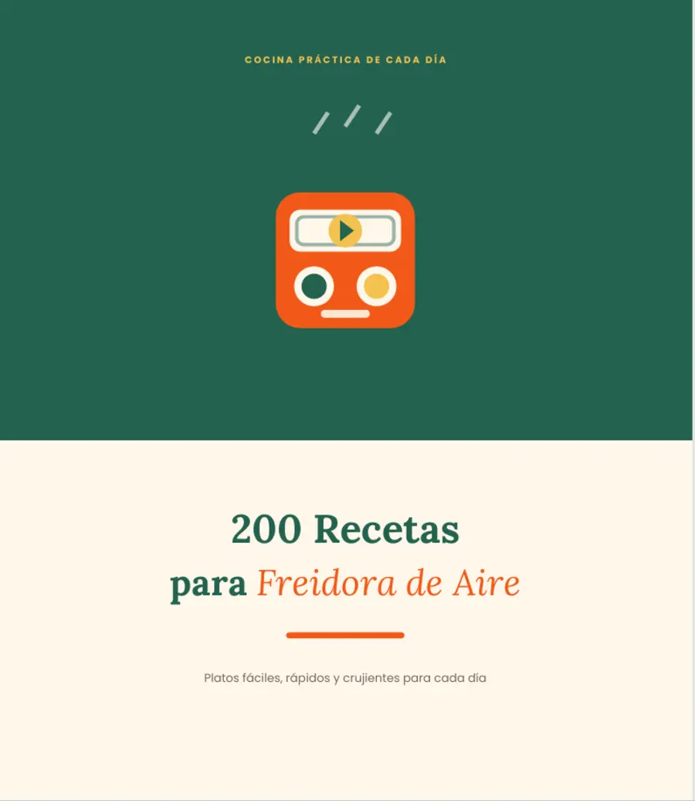
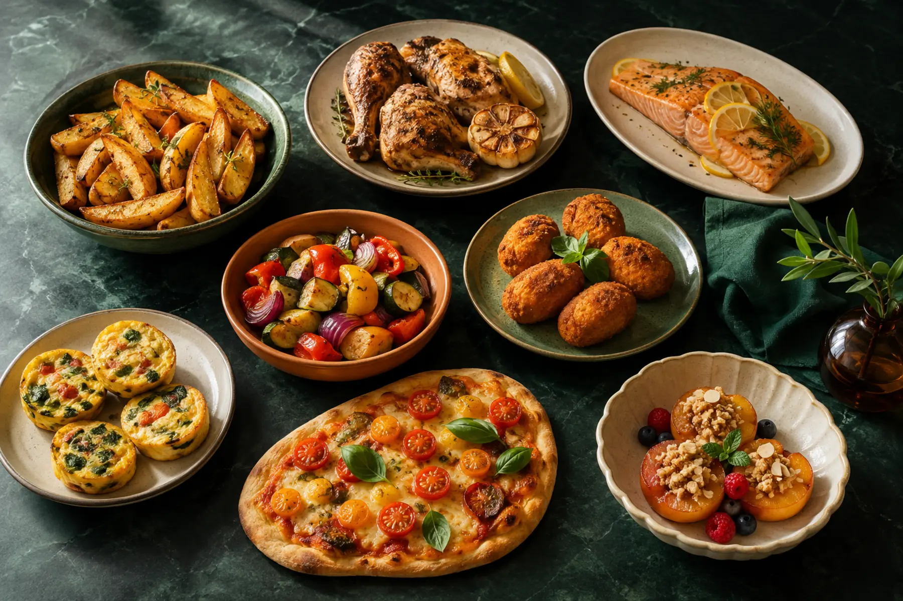

Cantidades claras
Ingredientes y pasos organizados en una sola página.
VUELTA A LA RUTINA · 200 RECETAS · 20 CATEGORÍAS
Con la vuelta a la rutina, cada minuto cuenta. Abre el recetario, elige una opción y cocina con ingredientes habituales, cantidades claras, tiempos y temperaturas completas.
Pago único y seguro con Hotmart · IVA calculado según ubicación · 7 días de garantía
Ver qué incluye el Pack Premium
MUESTRAS REALES DEL RECETARIO
Amplía la portada, el índice, una categoría y una receta completa. Sin imágenes genéricas ni promesas vacías.
TODO EN EL MISMO LUGAR
Cada receta reúne la información importante para consultar mientras cocinas.
Ingredientes y pasos organizados en una sola página.
Incluye cuándo girar o comprobar la cocción.
Índices por categoría, ingrediente principal y alérgeno.
Opciones rápidas, económicas, familiares, saladas y dulces.
ELIGE TU RECETARIO
Para encontrar una idea clara y cocinar con instrucciones completas.
Precio después del lanzamiento: 15 €
Pago único · IVA calculado por Hotmart según ubicación
Para decidir, comprar, conservar y variar sabores con menos pasos.
Precio después del lanzamiento: 25 €
Pago único · IVA calculado por Hotmart según ubicación
7 días para decidir con el producto en tus manos. Consulta las condiciones indicadas en el checkout de Hotmart.
LA DECISIÓN QUE SE REPITE CADA NOCHE
Después de un día lleno de horarios, trabajo y responsabilidades, todavía queda decidir qué preparar. El problema no suele ser la falta de comida: es la falta de una idea clara que encaje con el tiempo y los ingredientes disponibles.
Abre. Elige. Cocina. Sin empezar de cero cada noche.

COMPRA TRANSPARENTE
Las muestras de esta página pertenecen al PDF real. Después de la confirmación del pago, Hotmart envía las instrucciones de acceso al correo utilizado durante la compra.
QUÉ AÑADE EL PREMIUM
Por 6,00 € más que el Esencial.
Opciones extra listas en 15 minutos.
Una secuencia práctica con 4 listas de la compra.
Una guía para conservar y servir mejor.
Variaciones para cambiar sabores con la misma base.
COMPRA CON TRANQUILIDAD
El pago se procesa a través de Hotmart. Puedes solicitar el reembolso dentro del periodo indicado en el checkout.
*Válido mientras la oferta de Hotmart mantenga configurada una garantía de siete días.ANTES DE ELEGIR
No. Es un producto digital en formato PDF. No se envía ningún artículo por correo postal.
Después de la confirmación del pago, Hotmart enviará las instrucciones de acceso al correo utilizado durante la compra.
Sí. El PDF puede consultarse desde un móvil, una tableta o un ordenador compatible con archivos PDF.
Está pensado para modelos domésticos habituales. La potencia, el tamaño de la cesta y el grosor de los alimentos pueden cambiar ligeramente el tiempo, por lo que conviene comprobar la cocción.
El Esencial incluye las 200 recetas. El Premium añade 30 recetas rápidas, un menú de 30 días con cuatro listas, una guía de congelación y recalentado y 25 salsas, marinados y aliños.
Es un único pago. No se trata de una suscripción mensual.
Sí, dentro del periodo de garantía indicado en el checkout de Hotmart.
No. El contenido tiene una finalidad culinaria e informativa y no sustituye el asesoramiento de profesionales de la salud.
LA PRÓXIMA CENA PUEDE EMPEZAR CON UNA IDEA CLARA
200 recetas organizadas para consultar cuando el tiempo y las ideas escasean.
Oferta disponible hasta la fecha indicada arriba.